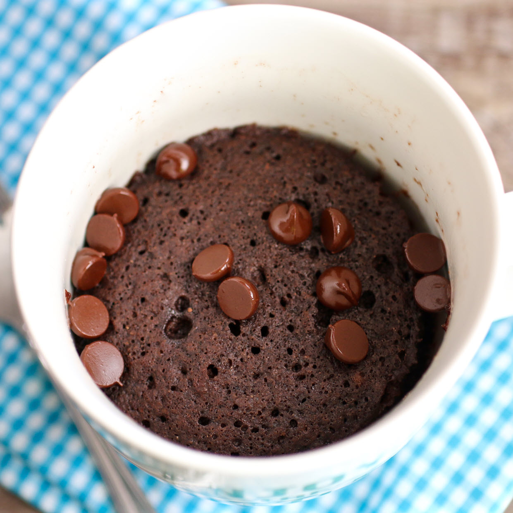

Microwave Chocolate Mug Cake
Description
This chocolaty fudgy treat is truly decadent and great for nights when you need a yummy dessert that is ready in less than 10 minutes! Chocolate chips make this recipe even better.
Ingredients
- ¼ cup all-purpose flour
- ¼ cup white sugar
- 2 tablespoons unsweetened cocoa powder
- ⅛ teaspoon baking soda
- ⅛ teaspoon salt
- 3 tablespoons milk
- 2 tablespoons canola oil
- 1 tablespoon water
- ¼ teaspoon vanilla extract
Steps
- Mix flour, sugar, cocoa powder, baking soda, and salt in a large microwave-safe mug; stir in milk, canola oil, water, and vanilla extract.
- Cook in microwave until cake is done in the middle, about 1 minute 45 seconds.